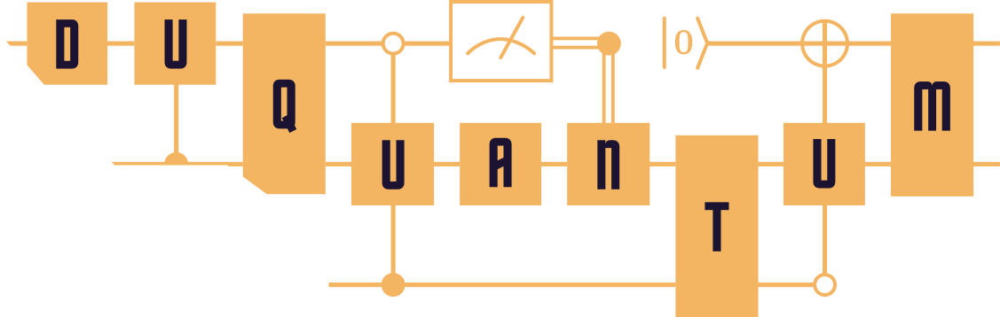

A tree beats a chain on time.
For W₁₀, both spread one excitation. The tree lets separate branches work at once.
37→15moments, chain → tree
In the team's idle-noise model, the X error term fell from 0.0075 to 0.0042.
An interactive field guide · Team Popeyes · Duke Quantum Hackathon
Meet Google's 105-qubit Willow layout. Make a Dicke state, route around a weak qubit, and discover why the shortest circuit is not always the best circuit.
Interactive demos are educational. Error rates in the routing lab are illustrative, not live Willow calibration.
01 / THE MISSION
A Dicke state spreads exactly n excitations across N qubits. Every bitstring with n ones gets the same amplitude. Every other bitstring gets zero.
For four qubits and two excitations, there are six equally likely answers. The quantum trick is making all six coexist coherently.
Change the number of qubits and excitations. Then take a sample measurement.
Lit dots are 1s. Each valid row has exactly two.
02 / THE HARDWARE
This is the real 105-qubit, 182-coupler willow_pink topology. Tap two qubits, mark one unavailable, and compare the fewest-hop route with a route that avoids noisy links.
Try the weak qubit at (6, 7). It sits on the direct path. The illustrative risk slider changes how costly its links are.
Choose two qubits to compare routes.
Toy cost: independent CZ failures, approximately three CZs per SWAP. It omits idle decoherence, readout, parallel scheduling, and the exact gate compilation. This is a teaching demo, not the submission router.
Why not simply choose the shortest path? A SWAP typically costs several entangling gates. One bad coupler can erase the gain from a shorter route. Our actual submission weighs calibrated gate error, readout error, idle time, and expected score when choosing a placement.
03 / THE TWO CHECKS
The challenge checks measurements in both Z and X bases. Z asks whether the excitation count and probabilities look right. X probes the phases that make it a coherent quantum superposition.
For two qubits, flip the relative phase between |01⟩ and |10⟩. Watch what changes.
The Z outcomes stay 50/50 in both cases.
The + state has the target correlation.
04 / THE SOLUTION
Our code chooses a construction from the case and then places it on usable qubits. Change N and n to see the rule used by the team's circuit builder.
Use an exact, precomputed Ry + CZ circuit and place its shape on good physical qubits.
For n > N/2, the code builds the complementary state and flips all qubits. Because Dicke states are permutation symmetric, routing swaps do not need to be undone.
05 / WHY THESE CHOICES
Three concrete examples from the team's research. All performance figures below come from simulation or exact circuit counts; no hardware score is claimed.
For W₁₀, both spread one excitation. The tree lets separate branches work at once.
In the team's idle-noise model, the X error term fell from 0.0075 to 0.0042.
For D⁶₃, an exact small-state circuit uses far fewer entangling gates than a routed baseline.
The angles are precomputed; the calibration chooses the placement at build time.
For D¹⁰₅, the selected two-arm construction beat an earlier circuit under the same evaluation harness.
The submission uses a measured crossover rule, with fallbacks if a candidate fails.
Expected score summed over 25 cases through N = 10, using three synthetic calibrations and the team's noise model.
THE CHALLENGE & EVENT
Team Popeyes built this explainer for the Google Quantum AI challenge at DuQuantum, the quantum hackathon at Duke. DuQuantum is a Major League Hacking (MLH) member event.

DuQuantum · Duke Quantum HackathonOfficial event site ↗ Google Quantum AIOfficial site ↗Logos are sourced from the organizations’ official sites linked above. This is an independent Team Popeyes explainer.
TAKE IT FURTHER
Willow is a graph of possible interactions. Dicke states demand equal amplitudes and intact coherence. Good circuit design joins topology, exact math, noise, and measured evidence.
Try another route